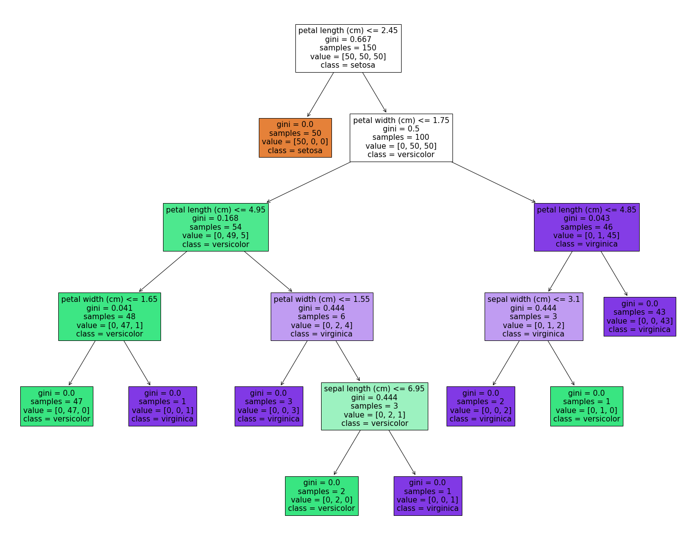
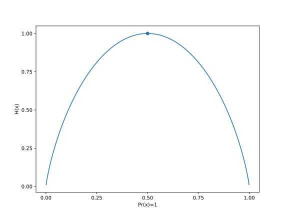
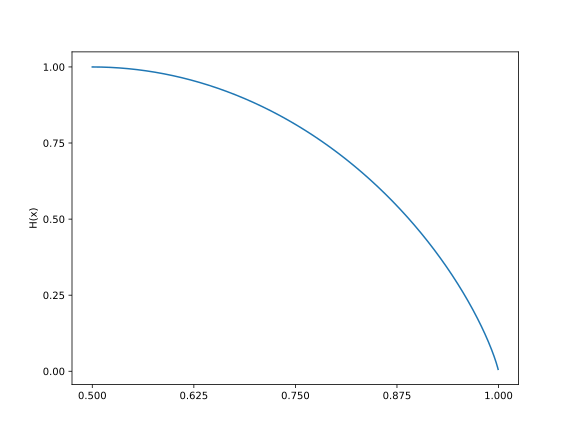
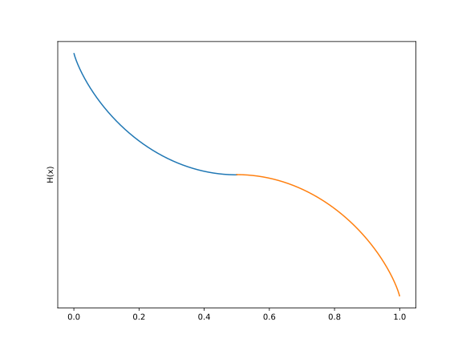
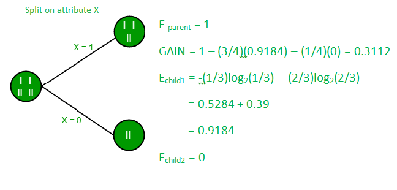

Information Theory: The Foundation behind Natural Language Processing
This blog will touch on the topic of entropy and explain in the simplest and basic language of what Information Theory is about and why it is important.
- What Exactly Is Entropy?
- The Origin of Entropy
- The Decision Tree Algorithm
- The Connections between These Two
- The Chi-Square Formula
- Coming Back to Decision Trees
- Example Cost Function in a Decision Tree: A Fruit Selection Case
- Heterogeneity and Uncertainty
- How Does Entropy Actually Work?
- Use of Entropy in Decision Tree
- Estimation of Entropy and Information Gain at Node Level
- How Is Entropy Important to Our Discussion?
What Exactly Is Entropy?
Entropy, a concept in physics, chemistry, and biology, refers to the number of microscopic configurations of atoms and molecules consistent with macroscopic requirements.
It has influenced various disciplines, including information theory, statistical physics, and classical thermodynamics. Bell Labs scientist Claude Shannon developed similar statistical methods in 1948.
The Origin of Entropy
Information theory, first introduced by Claude E. Shannon in 1958, measures uncertainty in messages using entropy.
Entropy measures the average uncertainty across all possible outcomes of a random variable. This theory, applicable to decision trees and machine learning models, can improve data storage, decision-making, and communication.
The Decision Tree Algorithm
The decision tree is a supervised learning technique in machine learning used to identify relationships between prediction and response variables in regression and classification problems.
It consists of root, branch, and leaf nodes, with homogenous leaf nodes for optimal predictions. Decision trees are used for binary categorization and decision-making.
The Connections between These Two
The decision tree algorithm is converting heterogeneity to homogeneity, according to the review of ideas.

Shannon's entropy framework is insufficient for decision-making involving uncertainty.
A decision tree algorithm aims to reduce data impurity by breaking down the tree, using metrics like entropy and Gini to quantify this impurity, which is crucial for human decision-making.
The Chi-Square Formula
A Pearson's Chi-Square test is a statistical test for categorical data.
💡Categorical data
1. is divided into groups or categories.
2. is based on qualitative characteristics.
3. has no order in categorical values and variables.
4. can take numerical values, but those numbers don’t
have any mathematical meaning.
5. is displayed graphically by bar charts and pie charts.The Pearson's Chi-Square test is used to determine if data significantly deviates from expectations. It can be used for the goodness of fit test to assess the frequency distribution of a categorical variable, and for the test of independence to determine their connection.
Chi-Square is often written as and is pronounce "kai-square". This is to run non-parametric tests on categorical data. Categorical variables can be nominal or ordinal and represent groupings such as species or nationalities.
The Chi-Square formula tests use the same formula to calculate the test statistic, Chi-Square ():
where:
Χ^2 is the Chi-Square test statistic
Σ is the summation operator (it means “take the sum of”)
O is the observed frequency
E is the expected frequencyThe test ultimately serves to understand and answer the question of whether the frequencies appeared between two categorical variables actually have connections or follow some pattern by comparing the observed frequencies to the frequencies that we might expect to obtain purely by chance.
Coming Back to Decision Trees
In decision trees, again entropy is a measure of impurity used to evaluates the homogeneity of a dataset. It helps determine the best split for building an informative decision tree model.
💡Gain and Entropy
1. Are related concepts in decision tree algorithms.
2. Gain measures the reduction in entropy achieved by splitting a dataset,
helping to identify the best attribute for partitioning the data.Example Cost Function in a Decision Tree: A Fruit Selection Case
Imagine a basket filled equally with two types of fruits: apples and bananas. You are asked to pick a fruit, but you must do so without looking.
This situation represents maximum uncertainty, as both outcomes (selecting an apple or a banana) are equally likely. If the basket had contained only apples or only bananas, the outcome would be completely certain (no uncertainty or surprise).
The probabilities for each outcome are as follows:
P(Fruit == Apple) = 0.50
P(Fruit == Banana) = 1 - 0.50 = 0.50However, in a scenario where the basket contains only one type of fruit, say only apples, the lack of heterogeneity eliminates uncertainty. The probabilities in such a case would be:
P(Fruit == Apple) = 1
P(Fruit == Banana) = 1 - 1 = 0Heterogeneity and Uncertainty
The degree of heterogeneity in a selection event directly influences uncertainty:
Higher heterogeneity (a mix of apples and bananas) increases uncertainty because there is less predictability in the outcome.
Lower heterogeneity (all apples or all bananas) reduces uncertainty, as the outcome is more predictable.
Decision trees quantify this uncertainty using measures like Gini Impurity or Entropy:
Gini Impurity assesses the probability of incorrectly classifying an item if it were labeled randomly according to the distribution of classes.
Entropy measures the amount of uncertainty or surprise in the dataset.
By understanding and minimizing uncertainty (heterogeneity) in the dataset, decision trees aim to make the most confident splits, ensuring better classification outcomes.
How Does Entropy Actually Work?
Claude E. Shannon had expressed this relationship between the probability and the heterogeneity or impurity in the mathematical form with the help of the following equation:
The uncertainty or the impurity is represented as the log to base 2 of the probability of a category (). The index () refers to the number of possible categories. Here, i = 2 as our problem is a binary classification.
This equation is graphically depicted by a symmetric curve as shown below. On the x-axis is the probability of the event and the y-axis indicates the heterogeneity or the impurity denoted by .
A derived proof is listed here
using PyPlot
figure(figsize=(8, 6))
x = range(0, 1, length=1000)
f(x) = .- x .* log2.(x) .- (1 .- x) .* log2.(1 .- x)
xticks(range(0,1,length=5))
yticks(range(0,1,length=5))
plot(x, f(x))
xlabel("Pr(x)=1")
ylabel("H(x)")
scatter([0.5],[1])
savefig(joinpath(@OUTPUT, "ent1.svg"))Below is the graph for a Bernoulli trial () the graph of entropy vs. . The highest

The has a very unique property that is when there are only two outcomes say probability of the event is either 1 or 0.50 then in such scenario takes the following values (ignoring the negative term):
Now, the above values of the probability and are depicted in the following manner:
using PyPlot
figure(figsize=(8, 6))
x = range(0.5, 1, length=1000)
f(x) = .- x .* log2.(x) .- (1 .- x) .* log2.(1 .- x)
xticks(range(0.5,1,length=5))
yticks(range(0,1,length=5))
plot(x, f(x))
ylabel("H(x)")
savefig(joinpath(@OUTPUT, "ent2.svg"))The output graph is below,

Due to the properties of log, When the probability, becomes 0, then the value of moves towards infinity and the curve changes its shape to:
using PyPlot
figure(figsize=(8, 6))
x = range(0,0.5,length=1000)
y = range(0.5,1,length=1000)
f(x) = (x .* log2.(x) .+ (1 .- x) .* log2.(1 .- x))
g(y) = (.- f(y))
plot(x, f(x) , y, g(y))
yticks([])
ylabel("H(x)")
savefig(joinpath(@OUTPUT, "ent3.svg"))The final graph is below,

The entropy or the impurity measure can only take value from 0 to 1 as the probability ranges from 0 to 1 and hence, we do not want the above situation. So, to make the curve and the value of back to zero, we multiply with the probability i.e. with itself.
Therefore, the expression becomes () and returns a negative value and to remove this negativity effect, we multiply the resultant with a negative sign and the equation finally becomes:
Now, this expression can be used to show how the uncertainty changes depending on the likelihood of an event.
The curve finally becomes the first graph.
This scale of entropy from 0 to 1 is for binary classification problems. For a multiple classification problem, the above relationship holds, however, the scale may change.
Calculation of Entropy in Python We shall estimate the entropy for three different scenarios. The event Y is getting an apple. The heterogeneity or the impurity formula for two different classes is as follows:
where,
p_i = Probability of Y = 1 i.e. probability of success of the event
q_i = Probability of Y = 0 i.e. probability of failure of the eventCase 1
| Fruit Type | Quantities | Probability |
|---|---|---|
| Apple | 7 | 0.7 |
| Banana | 3 | 0.3 |
| Total | 10 | 1 |
This value 0.88129089 is the measurement of uncertainty when given the box full of fruits and asked to pull out one of the fruits when there are seven apples and three bananas.
Case 2
| Fruit Type | Quantities | Probability |
|---|---|---|
| Apple | 5 | 0.5 |
| Banana | 5 | 0.5 |
| Total | 10 | 1 |
Case 3
| Fruit Type | Quantities | Probability |
|---|---|---|
| Apple | 10 | 1 |
| Banana | 0 | 0 |
| Total | 10 | 1 |
In scenarios 2 and 3, can see that the entropy is 1 and 0, respectively. In scenario 3, when we have only one kind, apple, and have removed all bananas, then the uncertainty or the surprise is also completely removed and the aforementioned entropy is zero. We can then conclude that the information is 100% present.
Use of Entropy in Decision Tree
The cost function for decision trees aims to reduce heterogeneity in leaf nodes by identifying attributes and thresholds. The Shannon entropy formula estimates entropy at the root level, with weighted entropy calculated at each branch.
Information gain, or entropy reduction, increases with decreasing entropy. This pattern in data is represented by the parent node's entropy less the child node's entropy, with entropy and information gain being equal.
The pattern in the data is known as information gain, which is also known as entropy reduction. It can alternatively be thought of as the parent node's entropy less the child node's entropy. The formula is 1 - entropy. For the three cases mentioned above, the entropy and information gain are as follows:
| Entropy | Information | Gain |
|---|---|---|
| Case 1 | 0.88129089 | 0.11870911 |
| Case 2 | 1 | 0 |
| Case 3 | 0 | 1 |
Estimation of Entropy and Information Gain at Node Level
We have the following tree with a total of four values at the root node that is split into the first level having one value in one branch (say, Branch 1) and three values in the other branch (Branch 2). The entropy at the root node is 1.
Now, to compute the entropy at the child node 1, the weights are taken as ⅓ for Branch 1 and ⅔ for Branch 2 and are calculated using Shannon’s entropy formula. As we had seen above, the entropy for child node 2 is zero because there is only one value in that child node meaning there is no uncertainty and hence, the heterogeneity is not present.
The information gain for the above tree is the reduction in the weighted average of the entropy.
Information

How Is Entropy Important to Our Discussion?
Entropy evaluates the "impurity or randomness present in a dataset" in machine learning. In decision tree methods, it is frequently used to assess the homogeneity of data at a specific node. A more varied group of data is indicated by a higher entropy score.
Entropy can be used by decision tree models to choose the optimal plots for making knowledgeable judgments and creating precise predictive models.
Conclusion
Entropy, a measure of uncertainty associated with a random variable's value, is crucial in machine learning and decision tree methods. It assesses the homogeneity of data at a specific node, with higher scores indicating more varied data. Entropy is used to select optimal plots for informed judgments and precise predictive models.